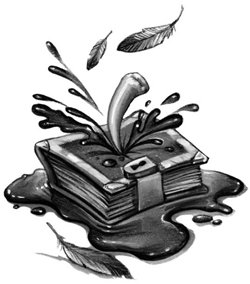

He was standing at the end of a very long, dimly lit chamber. Towering stone pillars entwined with more carved serpents rose to support a ceiling lost in darkness, casting long, black shadows through the odd, greenish gloom that filled the place.
His heart beating very fast, Harry stood listening to the chill silence. Could the basilisk be lurking in a shadowy corner, behind a pillar? And where was Ginny?
He pulled out his wand and moved forward between the serpentine columns. Every careful footstep echoed loudly off the shadowy walls. He kept his eyes narrowed, ready to clamp them shut at the smallest sign of movement. The hollow eye sockets of the stone snakes seemed to be following him. More than once, with a jolt of the stomach, he thought he saw one stir.
Then, as he drew level with the last pair of pillars, a statue high as the Chamber itself loomed into view, standing against the back wall.
Harry had to crane his neck to look up into the giant face above: It was ancient and monkeyish, with a long, thin beard that fell almost to the bottom of the wizard’s sweeping stone robes, where two enormous gray feet stood on the smooth Chamber floor. And between the feet, facedown, lay a small, black-robed figure with flaming-red hair.
“Ginny!” Harry muttered, sprinting to her and dropping to his knees. “Ginny — don’t be dead — please don’t be dead —” He flung his wand aside, grabbed Ginny’s shoulders, and turned her over. Her face was white as marble, and as cold, yet her eyes were closed, so she wasn’t Petrified. But then she must be —
“Ginny, please wake up,” Harry muttered desperately, shaking her. Ginny’s head lolled hopelessly from side to side.
“She won’t wake,” said a soft voice.
Harry jumped and spun around on his knees.
A tall, black-haired boy was leaning against the nearest pillar, watching. He was strangely blurred around the edges, as though Harry were looking at him through a misted window. But there was no mistaking him —
“Tom — Tom Riddle?”
Riddle nodded, not taking his eyes off Harry’s face.
“What d’you mean, she won’t wake?” Harry said desperately. “She’s not — she’s not — ?”
“She’s still alive,” said Riddle. “But only just.”
Harry stared at him. Tom Riddle had been at Hogwarts fifty years ago, yet here he stood, a weird, misty light shining about him, not a day older than sixteen.
“Are you a ghost?” Harry said uncertainly.
“A memory,” said Riddle quietly. “Preserved in a diary for fifty years.”
He pointed toward the floor near the statue’s giant toes. Lying open there was the little black diary Harry had found in Moaning Myrtle’s bathroom. For a second, Harry wondered how it had got there — but there were more pressing matters to deal with.
“You’ve got to help me, Tom,” Harry said, raising Ginny’s head again. “We’ve got to get her out of here. There’s a basilisk . . . I don’t know where it is, but it could be along any moment. . . . Please, help me —”
Riddle didn’t move. Harry, sweating, managed to hoist Ginny half off the floor, and bent to pick up his wand again.
But his wand had gone.
“Did you see — ?”
He looked up. Riddle was still watching him — twirling Harry’s wand between his long fingers.
“Thanks,” said Harry, stretching out his hand for it.
A smile curled the corners of Riddle’s mouth. He continued to stare at Harry, twirling the wand idly.
“Listen,” said Harry urgently, his knees sagging with Ginny’s dead weight. “We’ve got to go! If the basilisk comes —”
“It won’t come until it is called,” said Riddle calmly.
Harry lowered Ginny back onto the floor, unable to hold her up any longer.
“What d’you mean?” he said. “Look, give me my wand, I might need it —”
Riddle’s smile broadened.
“You won’t be needing it,” he said.
Harry stared at him.
“What d’you mean, I won’t be — ?”
“I’ve waited a long time for this, Harry Potter,” said Riddle. “For the chance to see you. To speak to you.”
“Look,” said Harry, losing patience, “I don’t think you get it. We’re in the Chamber of Secrets. We can talk later —”
“We’re going to talk now,” said Riddle, still smiling broadly, and he pocketed Harry’s wand.
Harry stared at him. There was something very funny going on here. . . .
“How did Ginny get like this?” he asked slowly.
“Well, that’s an interesting question,” said Riddle pleasantly. “And quite a long story. I suppose the real reason Ginny Weasley’s like this is because she opened her heart and spilled all her secrets to an invisible stranger.”
“What are you talking about?” said Harry.
“The diary,” said Riddle. “My diary. Little Ginny’s been writing in it for months and months, telling me all her pitiful worries and woes — how her brothers tease her, how she had to come to school with secondhand robes and books, how” — Riddle’s eyes glinted — “how she didn’t think famous, good, great Harry Potter would ever like her. . . .”
All the time he spoke, Riddle’s eyes never left Harry’s face. There was an almost hungry look in them.
“It’s very boring, having to listen to the silly little troubles of an eleven-year-old girl,” he went on. “But I was patient. I wrote back. I was sympathetic, I was kind. Ginny simply loved me. No one’s ever understood me like you, Tom. . . . I’m so glad I’ve got this diary to confide in. . . . It’s like having a friend I can carry around in my pocket. . . .”
Riddle laughed, a high, cold laugh that didn’t suit him. It made the hairs stand up on the back of Harry’s neck.
“If I say it myself, Harry, I’ve always been able to charm the people I needed. So Ginny poured out her soul to me, and her soul happened to be exactly what I wanted. . . . I grew stronger and stronger on a diet of her deepest fears, her darkest secrets. I grew powerful, far more powerful than little Miss Weasley. Powerful enough to start feeding Miss Weasley a few of my secrets, to start pouring a little of my soul back into her . . .”
“What d’you mean?” said Harry, whose mouth had gone very dry.
“Haven’t you guessed yet, Harry Potter?” said Riddle softly. “Ginny Weasley opened the Chamber of Secrets. She strangled the school roosters and daubed threatening messages on the walls. She set the serpent of Slytherin on four Mudbloods, and the Squib’s cat.”
“No,” Harry whispered.
“Yes,” said Riddle calmly. “Of course, she didn’t know what she was doing at first. It was very amusing. I wish you could have seen her new diary entries . . . far more interesting, they became. . . . Dear Tom,” he recited, watching Harry’s horrified face, “I think I’m losing my memory. There are rooster feathers all over my robes and I don’t know how they got there. Dear Tom, I can’t remember what I did on the night of Halloween, but a cat was attacked and I’ve got paint all down my front. Dear Tom, Percy keeps telling me I’m pale and I’m not myself. I think he suspects me. . . . There was another attack today and I don’t know where I was. Tom, what am I going to do? I think I’m going mad. . . . I think I’m the one attacking everyone, Tom!”
Harry’s fists were clenched, the nails digging deep into his palms.
“It took a very long time for stupid little Ginny to stop trusting her diary,” said Riddle. “But she finally became suspicious and tried to dispose of it. And that’s where you came in, Harry. You found it, and I couldn’t have been more delighted. Of all the people who could have picked it up, it was you, the very person I was most anxious to meet. . . .”
“And why did you want to meet me?” said Harry. Anger was coursing through him, and it was an effort to keep his voice steady.
“Well, you see, Ginny told me all about you, Harry,” said Riddle. “Your whole fascinating history.” His eyes roved over the lightning scar on Harry’s forehead, and their expression grew hungrier. “I knew I must find out more about you, talk to you, meet you if I could. So I decided to show you my famous capture of that great oaf, Hagrid, to gain your trust —”
“Hagrid’s my friend,” said Harry, his voice now shaking. “And you framed him, didn’t you? I thought you made a mistake, but —”
Riddle laughed his high laugh again.
“It was my word against Hagrid’s, Harry. Well, you can imagine how it looked to old Armando Dippet. On the one hand, Tom Riddle, poor but brilliant, parentless but so brave, school prefect, model student . . . on the other hand, big, blundering Hagrid, in trouble every other week, trying to raise werewolf cubs under his bed, sneaking off to the Forbidden Forest to wrestle trolls . . . but I admit, even I was surprised how well the plan worked. I thought someone must realize that Hagrid couldn’t possibly be the Heir of Slytherin. It had taken me five whole years to find out everything I could about the Chamber of Secrets and discover the secret entrance . . . as though Hagrid had the brains, or the power!
“Only the Transfiguration teacher, Dumbledore, seemed to think Hagrid was innocent. He persuaded Dippet to keep Hagrid and train him as gamekeeper. Yes, I think Dumbledore might have guessed. . . . Dumbledore never seemed to like me as much as the other teachers did. . . .”
“I bet Dumbledore saw right through you,” said Harry, his teeth gritted.
“Well, he certainly kept an annoyingly close watch on me after Hagrid was expelled,” said Riddle carelessly. “I knew it wouldn’t be safe to open the Chamber again while I was still at school. But I wasn’t going to waste those long years I’d spent searching for it. I decided to leave behind a diary, preserving my sixteen-year-old self in its pages, so that one day, with luck, I would be able to lead another in my footsteps, and finish Salazar Slytherin’s noble work.”
“Well, you haven’t finished it,” said Harry triumphantly. “No one’s died this time, not even the cat. In a few hours the Mandrake Draught will be ready and everyone who was Petrified will be all right again —”
“Haven’t I already told you,” said Riddle quietly, “that killing Mudbloods doesn’t matter to me anymore? For many months now, my new target has been — you.”
Harry stared at him.
“Imagine how angry I was when the next time my diary was opened, it was Ginny who was writing to me, not you. She saw you with the diary, you see, and panicked. What if you found out how to work it, and I repeated all her secrets to you? What if, even worse, I told you who’d been strangling roosters? So the foolish little brat waited until your dormitory was deserted and stole it back. But I knew what I must do. It was clear to me that you were on the trail of Slytherin’s heir. From everything Ginny had told me about you, I knew you would go to any lengths to solve the mystery — particularly if one of your best friends was attacked. And Ginny had told me the whole school was buzzing because you could speak Parseltongue. . . .
“So I made Ginny write her own farewell on the wall and come down here to wait. She struggled and cried and became very boring. But there isn’t much life left in her. . . . She put too much into the diary, into me. Enough to let me leave its pages at last. . . . I have been waiting for you to appear since we arrived here. I knew you’d come. I have many questions for you, Harry Potter.”
“Like what?” Harry spat, fists still clenched.
“Well,” said Riddle, smiling pleasantly, “how is it that you — a skinny boy with no extraordinary magical talent — managed to defeat the greatest wizard of all time? How did you escape with nothing but a scar, while Lord Voldemort’s powers were destroyed?”
There was an odd red gleam in his hungry eyes now.
“Why do you care how I escaped?” said Harry slowly. “Voldemort was after your time. . . .”
“Voldemort,” said Riddle softly, “is my past, present, and future, Harry Potter. . . .”
He pulled Harry’s wand from his pocket and began to trace it through the air, writing three shimmering words:
TOM MARVOLO RIDDLE
Then he waved the wand once, and the letters of his name rearranged themselves:
I AM LORD VOLDEMORT
“You see?” he whispered. “It was a name I was already using at Hogwarts, to my most intimate friends only, of course. You think I was going to use my filthy Muggle father’s name forever? I, in whose veins runs the blood of Salazar Slytherin himself, through my mother’s side? I, keep the name of a foul, common Muggle, who abandoned me even before I was born, just because he found out his wife was a witch? No, Harry — I fashioned myself a new name, a name I knew wizards everywhere would one day fear to speak, when I had become the greatest sorcerer in the world!”
Harry’s brain seemed to have jammed. He stared numbly at Riddle, at the orphaned boy who had grown up to murder Harry’s own parents, and so many others. . . . At last he forced himself to speak.
“You’re not,” he said, his quiet voice full of hatred.
“Not what?” snapped Riddle.
“Not the greatest sorcerer in the world,” said Harry, breathing fast. “Sorry to disappoint you and all that, but the greatest wizard in the world is Albus Dumbledore. Everyone says so. Even when you were strong, you didn’t dare try and take over at Hogwarts. Dumbledore saw through you when you were at school and he still frightens you now, wherever you’re hiding these days —”
The smile had gone from Riddle’s face, to be replaced by a very ugly look.
“Dumbledore’s been driven out of this castle by the mere memory of me!” he hissed.
“He’s not as gone as you might think!” Harry retorted. He was speaking at random, wanting to scare Riddle, wishing rather than believing it to be true —
Riddle opened his mouth, but froze.
Music was coming from somewhere. Riddle whirled around to stare down the empty Chamber. The music was growing louder. It was eerie, spine-tingling, unearthly; it lifted the hair on Harry’s scalp and made his heart feel as though it was swelling to twice its normal size. Then, as the music reached such a pitch that Harry felt it vibrating inside his own ribs, flames erupted at the top of the nearest pillar.
A crimson bird the size of a swan had appeared, piping its weird music to the vaulted ceiling. It had a glittering golden tail as long as a peacock’s and gleaming golden talons, which were gripping a ragged bundle.
A second later, the bird was flying straight at Harry. It dropped the ragged thing it was carrying at his feet, then landed heavily on his shoulder. As it folded its great wings, Harry looked up and saw it had a long, sharp golden beak and a beady black eye.
The bird stopped singing. It sat still and warm next to Harry’s cheek, gazing steadily at Riddle.
“That’s a phoenix. . . .” said Riddle, staring shrewdly back at it.
“Fawkes?” Harry breathed, and he felt the bird’s golden claws squeeze his shoulder gently.
“And that — ” said Riddle, now eyeing the ragged thing that Fawkes had dropped, “that’s the old school Sorting Hat —”
So it was. Patched, frayed, and dirty, the hat lay motionless at Harry’s feet.
Riddle began to laugh again. He laughed so hard that the dark Chamber rang with it, as though ten Riddles were laughing at once —
“This is what Dumbledore sends his defender! A songbird and an old hat! Do you feel brave, Harry Potter? Do you feel safe now?”
Harry didn’t answer. He might not see what use Fawkes or the Sorting Hat were, but he was no longer alone, and he waited for Riddle to stop laughing with his courage mounting.
“To business, Harry,” said Riddle, still smiling broadly. “Twice — in your past, in my future — we have met. And twice I failed to kill you. How did you survive? Tell me everything. The longer you talk,” he added softly, “the longer you stay alive.”
Harry was thinking fast, weighing his chances. Riddle had the wand. He, Harry, had Fawkes and the Sorting Hat, neither of which would be much good in a duel. It looked bad, all right . . . but the longer Riddle stood there, the more life was dwindling out of Ginny . . . and in the meantime, Harry noticed suddenly, Riddle’s outline was becoming clearer, more solid. . . . If it had to be a fight between him and Riddle, better sooner than later.
“No one knows why you lost your powers when you attacked me,” said Harry abruptly. “I don’t know myself. But I know why you couldn’t kill me. Because my mother died to save me. My common Muggle-born mother,” he added, shaking with suppressed rage. “She stopped you killing me. And I’ve seen the real you, I saw you last year. You’re a wreck. You’re barely alive. That’s where all your power got you. You’re in hiding. You’re ugly, you’re foul —”
Riddle’s face contorted. Then he forced it into an awful smile.
“So. Your mother died to save you. Yes, that’s a powerful counter-charm. I can see now . . . there is nothing special about you, after all. I wondered, you see. Because there are strange likenesses between us, Harry Potter. Even you must have noticed. Both half-bloods, orphans, raised by Muggles. Probably the only two Parselmouths to come to Hogwarts since the great Slytherin himself. We even look something alike. . . . But after all, it was merely a lucky chance that saved you from me. That’s all I wanted to know.”
Harry stood, tense, waiting for Riddle to raise his wand. But Riddle’s twisted smile was widening again.
“Now, Harry, I’m going to teach you a little lesson. Let’s match the powers of Lord Voldemort, Heir of Salazar Slytherin, against famous Harry Potter, and the best weapons Dumbledore can give him. . . .”
He cast an amused eye over Fawkes and the Sorting Hat, then walked away. Harry, fear spreading up his numb legs, watched Riddle stop between the high pillars and look up into the stone face of Slytherin, high above him in the half-darkness. Riddle opened his mouth wide and hissed — but Harry understood what he was saying. . . .
“Speak to me, Slytherin, greatest of the Hogwarts Four.”
Harry wheeled around to look up at the statue, Fawkes swaying on his shoulder.
Slytherin’s gigantic stone face was moving. Horrorstruck, Harry saw his mouth opening, wider and wider, to make a huge black hole.
And something was stirring inside the statue’s mouth. Something was slithering up from its depths.
Harry backed away until he hit the dark Chamber wall, and as he shut his eyes tight he felt Fawkes’ wing sweep his cheek as he took flight. Harry wanted to shout, “Don’t leave me!” but what chance did a phoenix have against the king of serpents?
Something huge hit the stone floor of the Chamber. Harry felt it shudder — he knew what was happening, he could sense it, could almost see the giant serpent uncoiling itself from Slytherin’s mouth. Then he heard Riddle’s hissing voice:
“Kill him.”
The basilisk was moving toward Harry; he could hear its heavy body slithering heavily across the dusty floor. Eyes still tightly shut, Harry began to run blindly sideways, his hands outstretched, feeling his way — Voldemort was laughing —
Harry tripped. He fell hard onto the stone and tasted blood — the serpent was barely feet from him, he could hear it coming —
There was a loud, explosive spitting sound right above him, and then something heavy hit Harry so hard that he was smashed into the wall. Waiting for fangs to sink through his body, he heard more mad hissing, something thrashing wildly off the pillars —
He couldn’t help it — he opened his eyes wide enough to squint at what was going on.
The enormous serpent, bright, poisonous green, thick as an oak trunk, had raised itself high in the air and its great blunt head was weaving drunkenly between the pillars. As Harry trembled, ready to close his eyes if it turned, he saw what had distracted the snake.
Fawkes was soaring around its head, and the basilisk was snapping furiously at him with fangs long and thin as sabers —
Fawkes dived. His long golden beak sank out of sight and a sudden shower of dark blood spattered the floor. The snake’s tail thrashed, narrowly missing Harry, and before Harry could shut his eyes, it turned — Harry looked straight into its face and saw that its eyes, both its great, bulbous yellow eyes, had been punctured by the phoenix; blood was streaming to the floor, and the snake was spitting in agony.
“NO!” Harry heard Riddle screaming. “LEAVE THE BIRD! LEAVE THE BIRD! THE BOY IS BEHIND YOU! YOU CAN STILL SMELL HIM! KILL HIM!”
The blinded serpent swayed, confused, still deadly. Fawkes was circling its head, piping his eerie song, jabbing here and there at its scaly nose as the blood poured from its ruined eyes.
“Help me, help me,” Harry muttered wildly, “someone — anyone —”
The snake’s tail whipped across the floor again. Harry ducked. Something soft hit his face.
The basilisk had swept the Sorting Hat into Harry’s arms. Harry seized it. It was all he had left, his only chance — he rammed it onto his head and threw himself flat onto the floor as the basilisk’s tail swung over him again.
Help me — help me — Harry thought, his eyes screwed tight under the hat. Please help me —
There was no answering voice. Instead, the hat contracted, as though an invisible hand was squeezing it very tightly.
Something very hard and heavy thudded onto the top of Harry’s head, almost knocking him out. Stars winking in front of his eyes, he grabbed the top of the hat to pull it off and felt something long and hard beneath it.
A gleaming silver sword had appeared inside the hat, its handle glittering with rubies the size of eggs.
“KILL THE BOY! LEAVE THE BIRD! THE BOY IS BEHIND YOU! SNIFF — SMELL HIM!”
Harry was on his feet, ready. The basilisk’s head was falling, its body coiling around, hitting pillars as it twisted to face him. He could see the vast, bloody eye sockets, see the mouth stretching wide, wide enough to swallow him whole, lined with fangs long as his sword, thin, glittering, venomous —
It lunged blindly — Harry dodged and it hit the Chamber wall. It lunged again, and its forked tongue lashed Harry’s side. He raised the sword in both his hands —
The basilisk lunged again, and this time its aim was true — Harry threw his whole weight behind the sword and drove it to the hilt into the roof of the serpent’s mouth —
But as warm blood drenched Harry’s arms, he felt a searing pain just above his elbow. One long, poisonous fang was sinking deeper and deeper into his arm and it splintered as the basilisk keeled over sideways and fell, twitching, to the floor.
Harry slid down the wall. He gripped the fang that was spreading poison through his body and wrenched it out of his arm. But he knew it was too late. White-hot pain was spreading slowly and steadily from the wound. Even as he dropped the fang and watched his own blood soaking his robes, his vision went foggy. The Chamber was dissolving in a whirl of dull color.
A patch of scarlet swam past, and Harry heard a soft clatter of claws beside him.
“Fawkes,” said Harry thickly. “You were fantastic, Fawkes. . . .” He felt the bird lay its beautiful head on the spot where the serpent’s fang had pierced him.
He could hear echoing footsteps and then a dark shadow moved in front of him.
“You’re dead, Harry Potter,” said Riddle’s voice above him. “Dead. Even Dumbledore’s bird knows it. Do you see what he’s doing, Potter? He’s crying.”
Harry blinked. Fawkes’s head slid in and out of focus. Thick, pearly tears were trickling down the glossy feathers.
“I’m going to sit here and watch you die, Harry Potter. Take your time. I’m in no hurry.”
Harry felt drowsy. Everything around him seemed to be spinning.
“So ends the famous Harry Potter,” said Riddle’s distant voice. “Alone in the Chamber of Secrets, forsaken by his friends, defeated at last by the Dark Lord he so unwisely challenged. You’ll be back with your dear Mudblood mother soon, Harry. . . . She bought you twelve years of borrowed time . . . but Lord Voldemort got you in the end, as you knew he must. . . .”
If this is dying, thought Harry, it’s not so bad.
Even the pain was leaving him. . . .
But was this dying? Instead of going black, the Chamber seemed to be coming back into focus. Harry gave his head a little shake and there was Fawkes, still resting his head on Harry’s arm. A pearly patch of tears was shining all around the wound — except that there was no wound —
“Get away, bird,” said Riddle’s voice suddenly. “Get away from him — I said, get away —”
Harry raised his head. Riddle was pointing Harry’s wand at Fawkes; there was a bang like a gun, and Fawkes took flight again in a whirl of gold and scarlet.
“Phoenix tears . . .” said Riddle quietly, staring at Harry’s arm. “Of course . . . healing powers . . . I forgot . . .”
He looked into Harry’s face. “But it makes no difference. In fact, I prefer it this way. Just you and me, Harry Potter . . . you and me. . . .”
He raised the wand —
Then, in a rush of wings, Fawkes had soared back overhead and something fell into Harry’s lap — the diary.
For a split second, both Harry and Riddle, wand still raised, stared at it. Then, without thinking, without considering, as though he had meant to do it all along, Harry seized the basilisk fang on the floor next to him and plunged it straight into the heart of the book.
There was a long, dreadful, piercing scream. Ink spurted out of the diary in torrents, streaming over Harry’s hands, flooding the floor. Riddle was writhing and twisting, screaming and flailing and then —
He had gone. Harry’s wand fell to the floor with a clatter and there was silence. Silence except for the steady drip drip of ink still oozing from the diary. The basilisk venom had burned a sizzling hole right through it.
Shaking all over, Harry pulled himself up. His head was spinning as though he’d just traveled miles by Floo powder. Slowly, he gathered together his wand and the Sorting Hat, and, with a huge tug, retrieved the glittering sword from the roof of the basilisk’s mouth.
Then came a faint moan from the end of the Chamber. Ginny was stirring. As Harry hurried toward her, she sat up. Her bemused eyes traveled from the huge form of the dead basilisk, over Harry, in his blood-soaked robes, then to the diary in his hand. She drew a great, shuddering gasp and tears began to pour down her face.
“Harry — oh, Harry — I tried to tell you at b-breakfast, but I c-couldn’t say it in front of Percy — it was me, Harry — but I — I s-swear I d-didn’t mean to — R-Riddle made me, he t-took me over — and — how did you kill that — that thing? W-where’s Riddle? The last thing I r-remember is him coming out of the diary —”
“It’s all right,” said Harry, holding up the diary, and showing Ginny the fang hole, “Riddle’s finished. Look! Him and the basilisk. C’mon, Ginny, let’s get out of here —”
“I’m going to be expelled!” Ginny wept as Harry helped her awkwardly to her feet. “I’ve looked forward to coming to Hogwarts ever since B-Bill came and n-now I’ll have to leave and — w-what’ll Mum and Dad say?”
Fawkes was waiting for them, hovering in the Chamber entrance. Harry urged Ginny forward; they stepped over the motionless coils of the dead basilisk, through the echoing gloom, and back into the tunnel. Harry heard the stone doors close behind them with a soft hiss.
After a few minutes’ progress up the dark tunnel, a distant sound of slowly shifting rock reached Harry’s ears.
“Ron!” Harry yelled, speeding up. “Ginny’s okay! I’ve got her!”
He heard Ron give a strangled cheer, and they turned the next bend to see his eager face staring through the sizable gap he had managed to make in the rockfall.
“Ginny!” Ron thrust an arm through the gap in the rock to pull her through first. “You’re alive! I don’t believe it! What happened? How — what — where did that bird come from?”
Fawkes had swooped through the gap after Ginny.
“He’s Dumbledore’s,” said Harry, squeezing through himself.
“How come you’ve got a sword?” said Ron, gaping at the glittering weapon in Harry’s hand.
“I’ll explain when we get out of here,” said Harry with a sideways glance at Ginny, who was crying harder than ever.
“But —”
“Later,” Harry said shortly. He didn’t think it was a good idea to tell Ron yet who’d been opening the Chamber, not in front of Ginny, anyway. “Where’s Lockhart?”
“Back there,” said Ron, still looking puzzled but jerking his head up the tunnel toward the pipe. “He’s in a bad way. Come and see.”
Led by Fawkes, whose wide scarlet wings emitted a soft golden glow in the darkness, they walked all the way back to the mouth of the pipe. Gilderoy Lockhart was sitting there, humming placidly to himself.
“His memory’s gone,” said Ron. “The Memory Charm backfired. Hit him instead of us. Hasn’t got a clue who he is, or where he is, or who we are. I told him to come and wait here. He’s a danger to himself.”
Lockhart peered good-naturedly up at them all.
“Hello,” he said. “Odd sort of place, this, isn’t it? Do you live here?”
“No,” said Ron, raising his eyebrows at Harry.
Harry bent down and looked up the long, dark pipe.
“Have you thought how we’re going to get back up this?” he said to Ron.
Ron shook his head, but Fawkes the phoenix had swooped past Harry and was now fluttering in front of him, his beady eyes bright in the dark. He was waving his long golden tail feathers. Harry looked uncertainly at him.
“He looks like he wants you to grab hold . . .” said Ron, looking perplexed. “But you’re much too heavy for a bird to pull up there —”
“Fawkes,” said Harry, “isn’t an ordinary bird.” He turned quickly to the others. “We’ve got to hold on to each other. Ginny, grab Ron’s hand. Professor Lockhart —”
“He means you,” said Ron sharply to Lockhart.
“You hold Ginny’s other hand —”
Harry tucked the sword and the Sorting Hat into his belt, Ron took hold of the back of Harry’s robes, and Harry reached out and took hold of Fawkes’s strangely hot tail feathers.
An extraordinary lightness seemed to spread through his whole body and the next second, in a rush of wings, they were flying upward through the pipe. Harry could hear Lockhart dangling below him, saying, “Amazing! Amazing! This is just like magic!” The chill air was whipping through Harry’s hair, and before he’d stopped enjoying the ride, it was over — all four of them were hitting the wet floor of Moaning Myrtle’s bathroom, and as Lockhart straightened his hat, the sink that hid the pipe was sliding back into place.
Myrtle goggled at them.
“You’re alive,” she said blankly to Harry.
“There’s no need to sound so disappointed,” he said grimly, wiping flecks of blood and slime off his glasses.
“Oh, well . . . I’d just been thinking . . . if you had died, you’d have been welcome to share my toilet,” said Myrtle, blushing silver.
“Urgh!” said Ron as they left the bathroom for the dark, deserted corridor outside. “Harry! I think Myrtle’s grown fond of you! You’ve got competition, Ginny!”
But tears were still flooding silently down Ginny’s face.
“Where now?” said Ron, with an anxious look at Ginny. Harry pointed.
Fawkes was leading the way, glowing gold along the corridor. They strode after him, and moments later, found themselves outside Professor McGonagall’s office.
Harry knocked and pushed the door open.